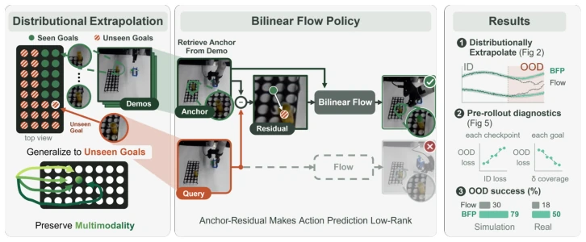
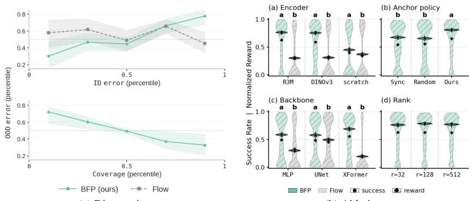
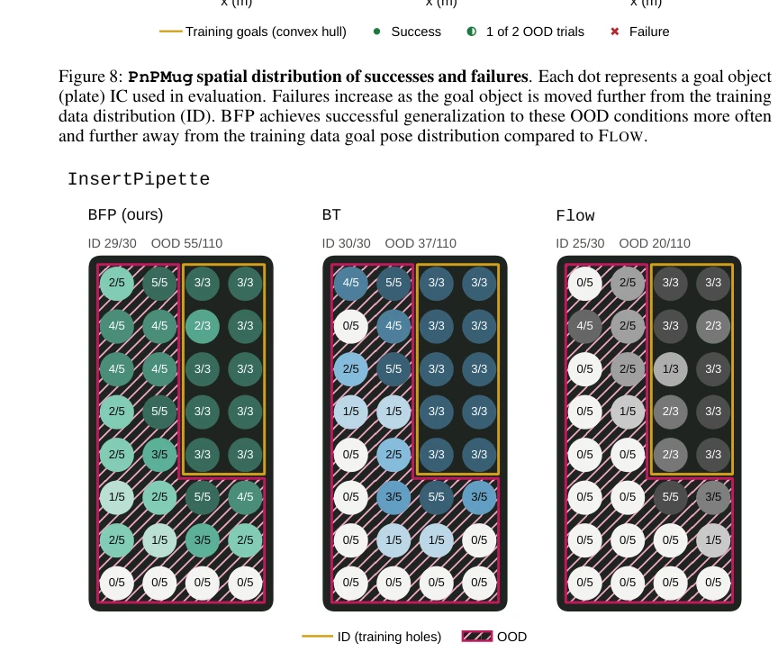
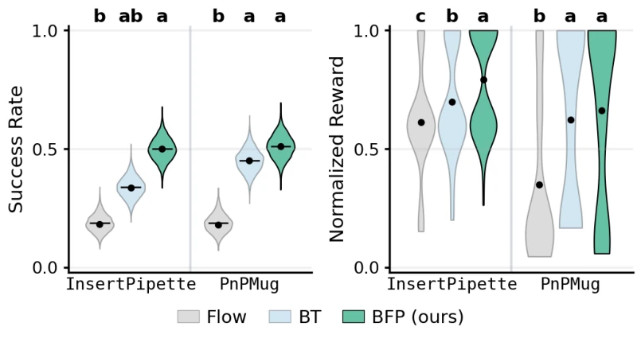
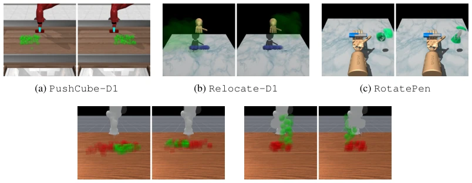

现有的目标条件模仿学习（GCIL），尤其是基于流匹配（Flow Matching）的生成式方法，虽然能完美复现训练数据中的多模态行为，但一旦遇到训练集之外的新目标（Out-of-Distribution, OOD），性能就会断崖式下跌。这是因为标准GCIL策略无法在未见条件下保持多模态分布的完整性，往往退化为均值回归或产生无意义的动作（Yang et al., 2023; Urain et al., 2024）。虽然已有工作尝试通过“双线性转导”（Bilinear Transduction, BT）来解决外推问题（Netanyahu et al., 2023），但BT主要处理确定性状态输入，且假设残差结构已知或易于构造，无法直接应用于高维、多模态的视觉运动模仿任务。此外，基于手工规则的外推方法（如等变性策略）（Wang et al., 2024a）或局部检索方法（如DARP）（Pfeifer et al., 2026）要么需要预知任务变换规律，要么无法有效保留动作分布的多模态特性。因此，亟需一种既能从数据中学习外推关系，又能保持生成式多模态特性的新框架。
—

Figure 1: BFP Overview. BFP learns how changes across observation-goal conditions affect be- havior and reuses this relation to extrapolate from a demonstrated anchor to an unseen goal. A bilinear conditional flow generates the resulting multimodal action distribution, while the explicit extrapolation rule enables theoretical guarantees and practical diagnostics.
Figure 3: Overview of BFP. Given an unseen observation–goal condition x, BFP retrieves an anchor x† and predicts from the resulting anchor–residual pair. The novel retrieval policy (Sec. 4.2) uses a phase estimator to form a phase-compatible candidate set and a learned scorer sψ, trained from held-out BFP loss, to select x†. A frozen visual encoder computes z = ϕ(x) and z† = ϕ(x†), with residual δ = z −z†. The novel bilinear conditional-flow predictor (Sec. 4.1) predicts the CFM velocity through the low rank-r interaction; flow integration then generates the action chunk.
Figure 4: BFP generalizes in visuomotor manipulation. (a) Success rate / Normalized reward av- eraged across seven simulation settings (b) Same across hardware tasks. Success rate violins show Bayesian posterior estimates under a uniform Beta prior. Normalized reward violins illustrate em- pirical distributions of the results. Dots represent sample means and horizontal lines show posterior means (success-rate only). Letters on top of the plots show statistical comparison, where columns not sharing the same alphabet are significantly different under 5% FWER control.

Figure 5: Pre-rollout diagnostics and BFP ablations. (a) Held-out ID flow error ranks OOD error for BFP but not for FLOW; within a fixed BFP checkpoint, better residual coverage is associated with lower extrapolation error. (b) Ablations of the visual encoder, anchor policy, backbone, and bilinear rank. Frozen pretrained features and phase-conditioned retrieval both lead to better perfor- mance; BFP can exploit stronger sequence backbones and performs similarly across the ranks.
Figure 7: OOD Rollout Strips. Successful BFP rollouts in OOD labeled with the progress phase used to compute dense reward. BT and FLOW failure rollouts in OOD exhibit common failure modes. In PnPMug and InsertPipette, FLOW often fails early in the task in grasping the manipuland despite its unchanging pose in the scene between ID training demonstrations and OOD rollouts. BT’s time-synchronized anchor cannot re-synchronize once the robot lags behind it, so the residual drifts off support and leads to a freezing failure mode where the policy fails to make further progress. In PnPMug this often occurs in the grasping phase, and in InsertPipette often occurs during the alignment phase.

Figure 9: InsertPipette spatial distribution of successes and failures. Each circle represents a test-tube IC used for evaluation in a 4 × 8 test-tube tray. Generalization to unseen, OOD goals is substantially improved with BFP.

Figure 10: Success rate and Dense reward under OOD evaluation on real-world robot hard- ware.

Figure 12: Distribution Shift. Each task panel visualizes the support of the training conditions (ID, left) and the held-out evaluation conditions (OOD, right). The paired views use the same camera and scene configuration so that the corresponding distribution shift is directly visible.